Drop #44 · December 30, 2025 · 20 min read
Who Killed Mario Tchou?
Hey everyone (▰˘◡˘▰)
Welcome back to DROPS. This Drop dives deep into PROGRAMMA 101, one of REINCANTAMENTO’s projects initiated in 2025 and one we’re most excited about.
PROGRAMMA 101 is a research project we first presented as an installation at MFRU 2025, the International Festival of Computer Arts in Maribor, Slovenia. Curated by Davide Bevilacqua and Lara Mejač, the festival’s public program brought us into dialogue with ŠUM and their investigation into Iskra Delta, a once-relevant Yugoslavian computer manufacturer.
Our installation combines archival materials, video essays, and a web environment where visitors navigate through fragments, clues, and traces, piecing together a mosaic that never quite resolves into certainty. The research was led by me, Alessandro Y. Longo, and Anna Fasolato, with video editing by Lapo Sorride, web design by osiom, and graphic design by Giorgio Craparo. You can visit the web space here.
At its core, the project explores the legacy of Olivetti, one of the most compelling techno-social experiments of the twentieth century.
We approach this heritage using theory-fiction, Carlo Ginzburg’s evidentiary paradigm, and the idea of conspiracy not as paranoia but as a lens for reading power to reshuffle the deck of postwar Italian and European history. PROGRAMMA 101 opens with a provocative question: Who killed Mario Tchou?
Mario Tchou was the leading engineer of Olivetti’s electronics division, who died in a car accident in 1961 while developing the ELEA 9003, the first fully transistorized mainframe in Italy and a direct ancestor of the semiconductor paradigm we still inhabit. We interpret this question symbolically: an entry point to interrogate the history of Olivetti and the futurability it still carries for us today. Riffing on conspiratorial narratives surrounding the company’s dismantling, we hope to access this archaeological site from a different angle, one where the past is not merely preserved but reactivated, transformed into a trajectory for navigating the present.
The project takes its name from the orphan child of Tchou’s dream: the Programma 101, the first desktop computer in history, secretly developed by engineer Pier Giorgio Perotto four years after Tchou’s death, with the electronics division already gutted and sold to General Electric, born from the ashes of a future foreclosed by Adriano Olivetti’s death and the company’s dismemberment.
But let’s pause here, and start from the beginning.
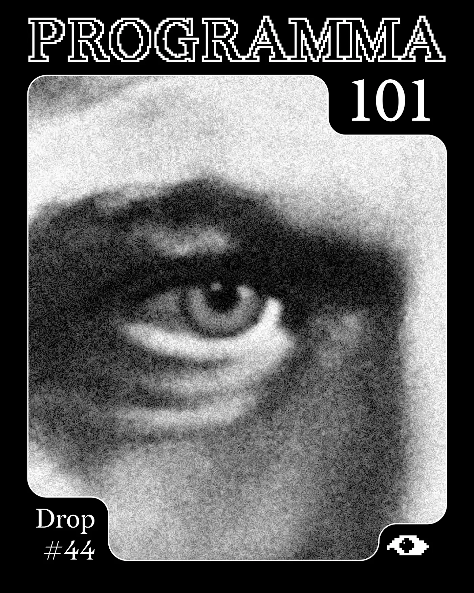
Typewriting a Vision
Deep blue eyes gaze across a valley at the edge of the Alps. From this vantage point unfolds a Weltanschauung: a political, social, and technological vision for postwar Italy, emerging not from Rome or Milan but from its North-West periphery. The main settlement in the area was known by the Romans as Eporedia - after Epona, the goddess of horses and mules, watching over a territory of crossings and transits, the gate to the Italian peninsula for every invader and conqueror descending from Europe.
There, at the beginning of the XX century, on a foggy autumn morning, the kind Piedmontese autumns are known for, the engineer Camillo Olivetti, launches a new enterprise: on the roof of a two-story red brick factory, a billboard reads ING. C. OLIVETTI & C. PRIMA FABBRICA NAZIONALE MACCHINE PER SCRIVERE.
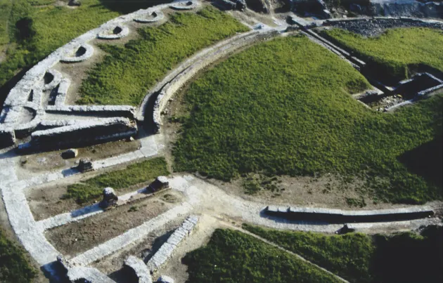
Typewriters were the productivity machines of the century, instruments designed to mechanize writing and synchronize it with the pulse of the Second Industrial Revolution. However, in the city of Ivrea in 1908, there wasn’t much of that revolution to admire. Camillo Olivetti summoned a modern marvel in the midst of what remained a largely agricultural society, a genie from the lamp materialized among rice paddies and vineyards, an anomaly that would ripple outward for decades.
In 1926, Camillo welcomed his twenty-five-year-old son Adriano into the family business. Adriano had just returned from the United States, where the year before he witnessed what he would later describe as a “miracle of organization” at the Ford and General Electric assembly lines. But the blue eyes of Adriano Olivetti, raised in a Catholic family, couldn’t help but grasp the contradictions of this gold-rush frenzy. Industrial capitalism produced, by design, anti-social externalities: the erasure of what Pasolini would later call the “particular realities” of the pre-industrial world, the mechanization of labour dissolving the uniqueness of craftsmanship and reducing workers to interchangeable components. This was not a Marxist critique but an acute, social-Catholic awareness of the costs of progress, both on the material and the spiritual plane.
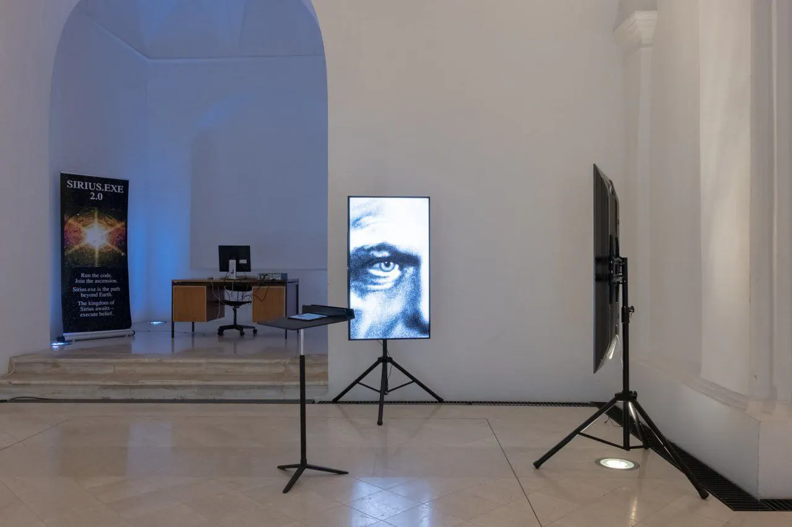
For Adriano, his reflections on America couldn’t help but bring him back to the Canavese and to Ivrea, where his family ran a hi-tech enterprise in the midst of a rural territory, far from the industrial fumes of the nascent Italian industrial triangle. Back in Ivrea, he wrote to his father: “The most important thing is organization, and ours must be radically transformed. We need graduate technicians who bring knowledge and novelty. And then... think about it, dad... a portable machine... it would be a sensation.” Camillo replied: “You, Adriano, with these new methods of yours, will be able to do anything. Except fire someone. Because involuntary unemployment is the most terrible evil that afflicts the working class”.
But how to modernize without disenchanting? Weber had already diagnosed the wound: every rationalization of labour, production, and urban life necessarily produces the disappearance of local worlds, the proletarianization of pre-existing human skills. This residue of loss need not become a reason to retreat into anti-technological primitivism. It can instead become a point of departure, a painful awareness from which to re-enchant a new technical and social fabric, to develop an organizational rationality that is also empathic and holistic, capable of producing cognitive and affective milieus centered on solidarity rather than extraction.
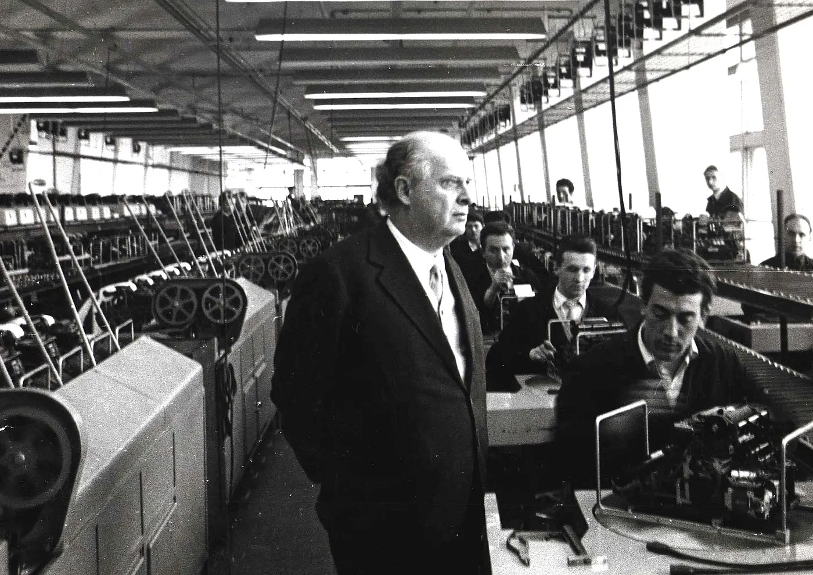
Adriano translated this intuition into a concrete organizational form. He raised wages, maintained no-firing policies, built canteens and recreational spaces. Olivetti invited Le Corbusier to Ivrea in 1934 to discuss management, architecture, and planning. The Swiss-French master would later call Via Jervis, the main street running through the Olivetti complex, “the most beautiful street in the world”. Adriano commissioned the young rationalist architects Luigi Figini and Gino Pollini to design buildings that dissolved the barriers between work and community: glass facades, with open floor plans flooded with daylight, and four-meter-high ceilings.
The same principles he tried to apply to the urban context around him, with the 1938 Ivrea Master Plan, which tried to balance factory expansion with the preservation of traditional forms of inhabiting. Ivrea, Olivetti’s functional city, became the epicenter of what Ferruccio Parri described as “the most beautiful gathering of minds this postwar period has perhaps seen”. Not only architects or technicians, but Olivetti also gave space to poets and writers like Franco Fortini and Paolo Volponi to work within the company.
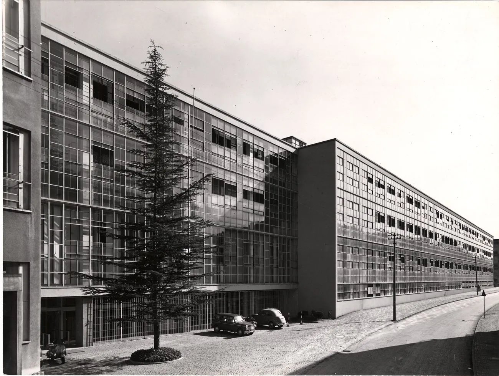
He gave space in Olivetti to artists and intellectuals like Gassman, De Filippo, Fo, Carmelo Bene, Pasolini, Eco, Moravia, and Guttuso. The assembly line crossed by literature, theatre, and cinema, with the strong conviction that an enterprise oriented toward human flourishing would outperform one oriented solely toward profit. On the other hand, a vision still anchored to work as the center of life, shaped by the specific conditions of Italian industrialization, and diplomatically entangled with every power structure capable of threatening its existence. Olivetti’s autonomy was purchased through strategic friendships: with Fascism when required, with American intelligence during the war, with Christian Democrats and Socialists in the Republic. The question this raises is not whether Olivetti was sincere, but whether any emancipatory project can survive when its existence depends on the goodwill of the very powers it seeks to transcend.
This wager, however, paid off successfully. By the 1950s, Olivetti was a global force, and its Lettera 22 typewriter was an icon of democratic design. The company’s well-built, well-conceived machines were sold in 117 countries, acquiring a reputation not only for competitiveness but for something more demanding: uniqueness - what came to be called the Tocco Olivetti. But Adriano was already looking further, maybe aware of the growing limits of its success.
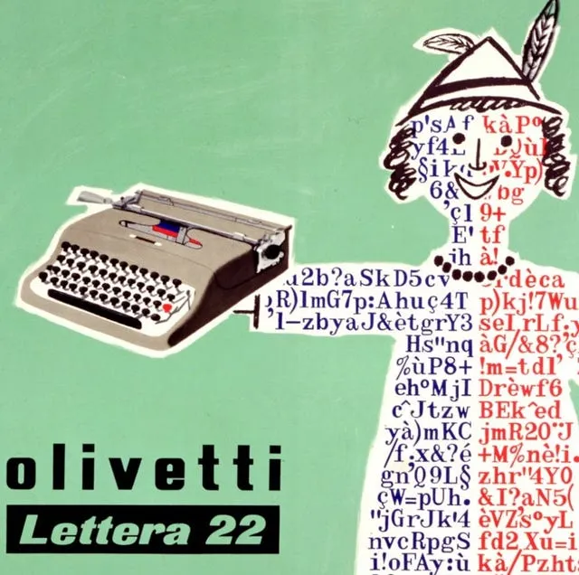
Computation and Paranoia
“In me non c’è che futuro”. All there is in me is the future. A statement many have attributed to Adriano Olivetti to emphasize his proverbial impatience, his constant movement, and his habit of always being in the car. What futurability is still to be uncovered in this story? Another digital society was possible, but then it ceased to seem likely. In between: the occult and non-occult intervention of certain powers at play in Italy and Europe.
Rome, 1954. Roberto Olivetti, Adriano’s son, freshly graduated from Harvard, arranges a lunch with Enrico Fermi, creator of the world’s first nuclear reactor, to convince his father to invest in electronics. Adriano is intrigued, but the decisive encounter, however, happened elsewhere. In New York, he met Mario Tchou, a young Italo-Chinese engineer teaching at Columbia University, who accepted the proposal to return to Italy and lead Olivetti’s new Electronic Laboratory in Pisa. Tchou assembled one of Europe’s most audacious technological ventures, personally conducting hundreds of interviews and favoring youth over experience: “New things are only done by young people,” he insisted, “only the young will throw themselves into it with enthusiasm, without personal agendas and without obstacles from conventional mentality”.
Mario Tchou’s team developed the ELEA series, named after the Eleatic school of philosophy founded by Parmenides in the fifth century BCE.
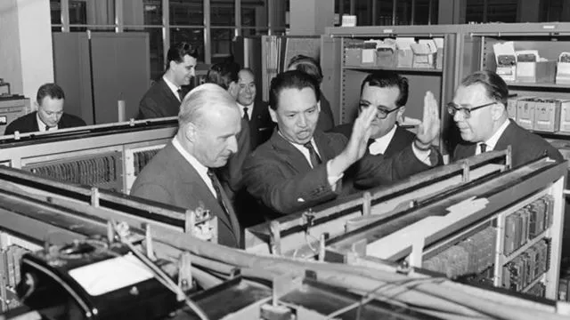
First, the Macchina Zero, a vacuum tube prototype. Then the 9002, market-ready but still based on tubes. Tchou was not convinced and suspended the launch: the time had come to bet on transistors, invented in 1947 at Bell Labs, solid-state devices that consumed minimal power with unprecedented reliability. In 1959, the ELEA 9003 was born: the first fully transistorized mainframe computer in the world, running neck and neck with IBM. A machine the size of a room, designed by Ettore Sottsass with an ergonomic console that put man, not machine, at the center. Mario’s wife Elisa recalls him showing her a box of matches and saying that one day all of this, meaning the enormous ELEA, would fit in a box that small. A machine promising an Italian path into the computational age, autonomous from American hegemony.
That same year, Olivetti made its most audacious move yet: the acquisition of Underwood, the legendary American typewriter company founded in 1874. It was the largest foreign takeover of a U.S. company ever attempted, a watershed moment. The plan was to use Underwood’s distribution network and Hartford plant to assemble Olivetti’s new computers for the American market. The U.S. government immediately slapped the new Olivetti-Underwood merger with an antitrust suit, an indication that, somewhere, the development was being viewed with alarm and that it had to be stopped.
At the dawn of the Sixties, Olivetti was a global leader in its field, poised to leap into the new computational age with a clear social agenda, and a strong, beloved leader at the helm.
Within twenty-four months, everything collapsed.
February 27, 1960: Adriano Olivetti dies of a heart attack on a train from Milan to Lausanne. He was fifty-eight. While the family attended the funeral, the villas of Adriano and his brother Dino were broken into. Nothing of value was taken, but home offices were torn apart, papers strewn everywhere. Important documents were missing.
After just over a year, on November 9, 1961: a rainy morning on the Milan-Turin autostrada. A Buick Skylark carrying Mario Tchou and his driver, Francesco Frinzi, collides with a truck near Santhià. Tchou dies instantly. He was thirty-seven. The official report noted the driver was drunk, the car reeking of alcohol, yet neither man was known to drink. The road was notoriously dangerous, the kind of road where accidents happen all the time, which is precisely the kind of road one would choose if one wanted an accident to happen.
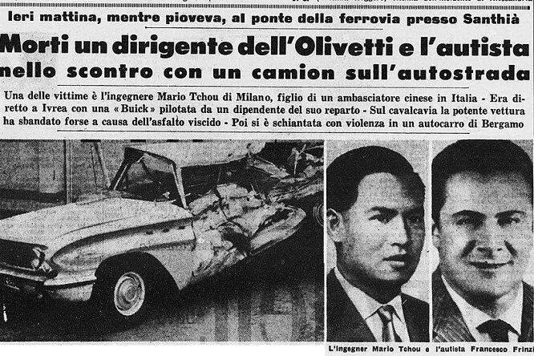
Two deaths. Two accidents. Twenty months apart. The father of Olivetti's humanist vision and the man carrying its technological future, both gone.
Hence the question: Who killed Mario Tchou? Which is really to ask: was there some force invested in suffocating Olivetti’s industrial and social experiment?
Let us be clear from the outset: this is not a question that can be answered affirmatively by following the historical truth of events. In the official account, these unfortunate coincidences are a glitch in history, the sad conclusion of a virtuous arc that remains a unicum in Italian industrial history. This answer holds, of course, only if one demands the kind of proof that yields incontrovertible truth.
In 1974, Pier Paolo Pasolini, himself soon to become a victim of an unfortunate coincidence, famously wrote in what would be the last editorial of his life: “I know. But I don’t have any evidence”. He was speaking of the so-called Strategy of Tension: the name given to the counter-history of the Italian Republic, that murky entanglement of neo-fascist terrorism, NATO’s secret stay-behind networks, intelligence services, mafia and political manipulation that constrained Italian democracy through the indiscriminate political use of violence. The subject is too vast to address here, but suffice it to say that for most of these events no shared truth exists even today.
I argue that this truth cannot be revealed for two reasons: first, because the heirs of those responsible still hold power in Italy, often wearing new masks; and second, because the contemporary Italian identity, or the lack thereof, is founded precisely on the void carved into the collective memory of those years, on that violent erasure. But this is a topic for another occasion.
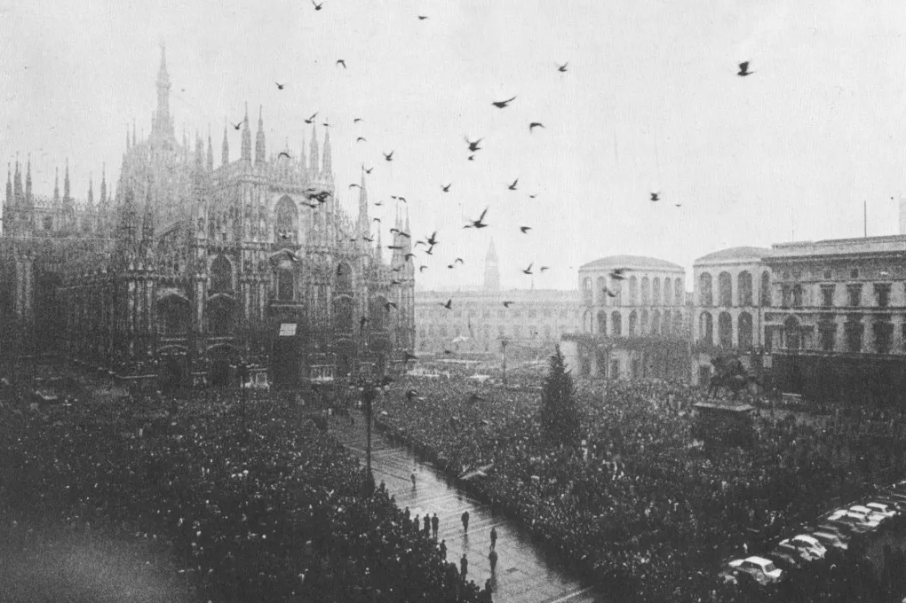
In the editorial, Pasolini was also making an epistemological claim. It is often structurally impossible to obtain the proof, both in the journalistic and juridical sense, of the crimes committed by those in power. Why? Pasolini describes a scenario of informational asymmetry:
Power, and the world that, even though it does not belong to power, holds concrete relationships with power, has excluded free intellectuals – because of its inherent nature – from the possibility of gathering evidence and clues. It could be objected to me that I, for example, as an intellectual and maker of stories, could enter that explicitly political world of power or close to power, make compromises with it, and thus gain the right to obtain, in some likelihood, evidence and clues. But to this objection I would respond that this is not possible, precisely because it is my loathing to enter into such a political world that identifies my potential intellectual power to speak the truth: that is to say, to name names. The intellectual courage to speak the truth and the practice of politics are incompatible in Italy.
A question, then, for which no precise answers exist. But perhaps the wrong kind of answer is being sought. If proof in the juridical sense is structurally inaccessible, another form of knowledge must be mobilized.
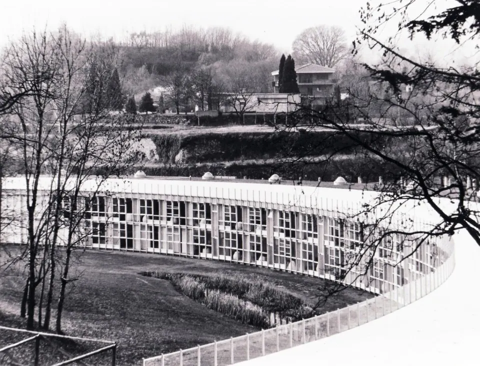
One year after Pasolini’s death, the historian Carlo Ginzburg articulated precisely such an alternative. He called it paradigma indiziario: the evidentiary paradigm. It names a mode of knowledge founded on an interpretive method centered on discards, and on marginal data considered as revelatory. Details usually deemed unimportant, or even trivial, low, become the key to accessing what would otherwise remain hidden. Ginzburg traces this way of knowing back to the primordial gesture of the hunter crouched over traces in the mud: footprints, broken branches, tufts of fur caught on bark, droppings. From these scraps, the hunter reconstructs the shape, movements, and habits of invisible prey. It is a knowledge born of necessity, developed by those who must read the world without the privilege of direct access.
We borrow the “elastic rigor” of this method to observe from a different position the decline of Olivetti.
So, again: was there some force invested in suffocating Olivetti’s industrial and social experiment? Let’s look at some clues.
First, The acquisition of Underwood - the largest foreign takeover of a U.S. company ever attempted - was slapped by the Federal government with an antitrust suit. The plan was to use Underwood’s Hartford plant to assemble Olivetti’s new computers for the American market. The new Olivetti-Underwood company was set to debut on the Milan stock exchange the first week of March 1960. Adriano was making final arrangements for that launch the day he died. The full merger was completed in 1963, but without Adriano’s vision the acquisition became an albatross. Underwood’s plants were obsolete, and its operations bleeding money, contributing to Olivetti’s crisis.
Second: geopolitics. As early as 1959, Adriano was opening markets behind the Iron Curtain: the Soviet Union, Eastern Europe, and most audaciously, Mao Zedong’s China. Italy’s tendency to slip from the rigid bipolarity of the Cold War made certain actors nervous. A company that couldn’t be controlled was a company that posed a threat. Olivetti was not the first suspicious Italian entrepreneur at the time.
Third: the spy. As Meryle Secrest documents, “Olivetti probably never knew that his goals and prospects were also being reported to the CIA by someone close to him. In short, there was a spy in his midst”. A CIA interoffice memo dated December 5, 1957 describes this informant: “He or she knows Olivetti well, and has studied the Comunità movement at first hand”. The memo notes that this person spoke idiomatic English.
Fourth: the funeral. While the Olivetti family attended Adriano’s burial, the villas of Adriano and his brother Dino were broken into. Nothing of value was taken, but home offices were torn apart, papers strewn everywhere. Important documents were missing. Later, a prototype of the Programma 101 was stolen. No one knew which documents, or no one was talking.
Fifth: the takeover. After Adriano’s death, the company fell into the hands of a “rescue group” that included FIAT, Pirelli and Mediobanca. In 1964 they sold the electronics division to General Electric for a pittance. Vittorio Valletta, the “Professore” at FIAT, declared that electronics was a “mole” on the corporate face of Olivetti, a blemish to be eradicated. It is worth remembering that both Valletta and FIAT’s head, Gianni Agnelli, were hardcore anti-communist, entangled with Atlantic secret services and politics. Enrico Cuccia, Mediobanca’s director, was the “banker of the bankers” and a confirmed member of the subversive Masonic lodge P2.
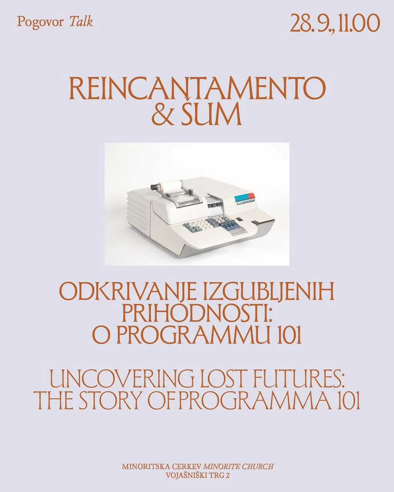
Another important Italian writer, investigating yet another Italian mystery where documents vanished and official narratives never quite cohered, offers us a further methodological trace. Leonardo Sciascia, writing about the Moro affair:
In the making of every event that then assumes grand form there is a concurrence of minute events, so minute as to be sometimes imperceptible, which in a motion of attraction and aggregation move toward an obscure center, toward a void magnetic field where they take shape: and together they become the great event itself. In this form, in the form they assume together, no minimal event, no minute event is accidental, incidental, fortuitous: the parts, even if molecular, find necessity.
Striking the Spark
What is the obscure center toward which these molecular events moved? Was it conspiracy or contingency? The question may be wrongly posed. Power is the selection and imposition of one possibility among many, and at the same time, the exclusion and invisibilization of many others. Perhaps what we are witnessing is not a direct assassination but something more diffuse: a systemic immune response, the way hegemonic structures neutralize futures they cannot absorb. A form of historical selection that operates through the accumulation of aligned interests and propagated pressures.
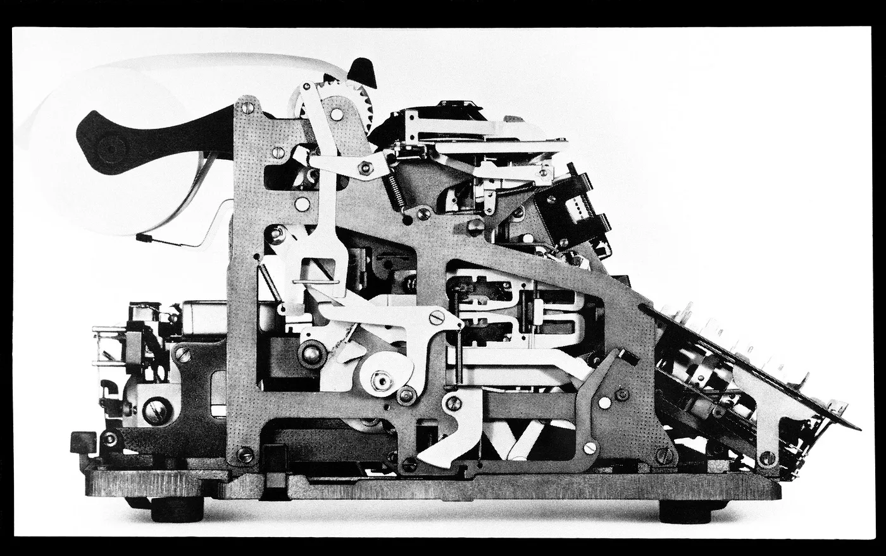
What kind of fossil, then, is Olivetti? Maks Valenčič, with whom we had the pleasure of dialoguing at MFRU, poses a similar question about Iskra Delta, the Yugoslavian computer company that traced a parallel arc of innovation and dissolution. Writing in ŠUM, he asks whether such a fossil can “retroactively strike the spark”. The same question applies to Ivrea. A fossil is a cipher: it contains both deep past and distant future. To read Olivetti as such means to ask not what was lost but what remains latent.
What potential was encoded in the feedback loop that made Olivetti so singular: the way the economic engine entered into positive reciprocity with the territory that hosted it. The factory made the city possible; the city made the factory what it was. And yet this hyper-local attention coexisted with a desire to operate at a planetary scale, dancing delicately across geopolitical barriers. The vision was not parochial: the territory was the launchpad rather than a limit.
This is the isomorphic challenge that confronts us.
Today, we discuss European digital sovereignty as if it were a policy problem to be solved through regulation and investment. But sovereignty cannot be achieved through negation alone, by defining what we refuse. It requires an affirmative vision, a positive conception of what European technology might be. We risk being, as Bratton puts it, “technologically diverse but cosmologically monocultural”. The real challenge of technodiversity, in an age of multipolar computation, is to allow our technological stacks to be animated by different imaginaries.
This is why we return to the question: who killed Mario Tchou? Not to solve it, but to keep it open. The conspiracy is a speculative practice, a way of treating historical traces as coordinates for divergent futures rather than evidence for closed cases. Olivetti is not a blueprint for today, but a reminder that certain problems were once posed, and partially answered, before being foreclosed.
After all, something did survive. Perotto and his team, the orphaned heirs of Tchou’s dream, worked in secret to complete what the dismantling was meant to bury. The Programma 101, the first personal computer in history, was unveiled at the 1965 New York World’s Fair. If they could build a future from ruins, perhaps so can we. Repurposing You Mi’s words: if Programma 101 was the endpoint, where do we begin?
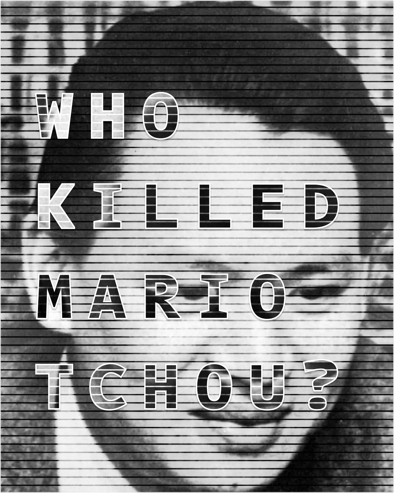
Bibliography
Berardi, Franco “Bifo.” Futurability: The Age of Impotence and the Horizon of Possibility. London: Verso, 2019.
Bratton, Benjamin. “The Stack at the Edge of Planetarity: Convergence, Divergence, and War.” In Vertical Atlas, edited by L. Dellanoce et al. Het Nieuwe Instituut, 2022.
Ginzburg, Carlo, and Anna Davin. “Morelli, Freud and Sherlock Holmes: Clues and Scientific Method.” History Workshop, no. 9 (Spring 1980): 5–36.
Olivetti, Adriano. Ai Lavoratori. Roma: Edizioni di Comunità, 2012.
Olivetti, Adriano. Democrazia senza partiti. Roma: Edizioni di Comunità, 2013.
Olivetti, Adriano. L’impresa, la comunità e il territorio: Atti del seminario. Collana Intangibili 27. Roma: Fondazione Adriano Olivetti, 2015.
Pasolini, Pier Paolo. “Cos’è questo golpe? Io so.” Corriere della Sera, 14 novembre 1974.
Perotto, Pier Giorgio. Programma 101: L’invenzione del personal computer. Milano: Sperling & Kupfer, 1995.
Salerno, Daniele. “Conspiracy as Politics of Historical Knowledge: Italian Terrorisms and the Case of Romanzo di una strage / Piazza Fontana: The Italian Conspiracy.”
Santoro, Giuliano. “Glosse a La Q di Qomplotto.” Giap, Wu Ming Foundation, 3 giugno 2021.
Sciascia, Leonardo. L’affaire Moro: seguito dalla Relazione parlamentare. Palermo: Sellerio editore, 2009.
Secrest, Meryle. The Mysterious Affair at Olivetti: IBM, the CIA, and the Cold War Conspiracy to Shut Down Production of the World’s First Desktop Computer. New York: Knopf, 2019.
Tarpino, Antonella. Memoria imperfetta: La comunità Olivetti e il mondo nuovo. Torino: Einaudi, 2020.
Valenčič, Maks. “Humanity’s Time-Punk Challenge.” ŠUM #16, 2023.
You Mi. “A Different Endpoint: Qian Xuesen and Cosmotechnics.” In Machine Decision is Not Final: China and the History and Future of Artificial Intelligence, edited by Benjamin Bratton, Bogna Konior, Anna Greenspan, and Amy Ireland. Falmouth: Urbanomic, 2025.